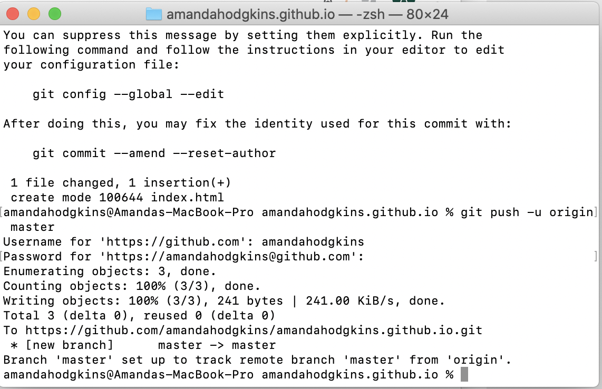

Template by W3.CSS
The assignment for week 3 was to design a token with either the biohazard or chemical weapon symbol in Fusion360 and 3D print it.
After getting trained to use the 3D printer by Whitney, I was all set to start this assignment! To begin, I downloaded Fusion360, which is the software we would be using to make our 3D printed token. To do this, I had to create an Autodesk student account affiliated with Wheaton College, before downloading Fusion360 from their website. After I had all of the software I needed, I started looking at Kevin's tutorials on Madison's website so I could learn how to use Fusion360. 